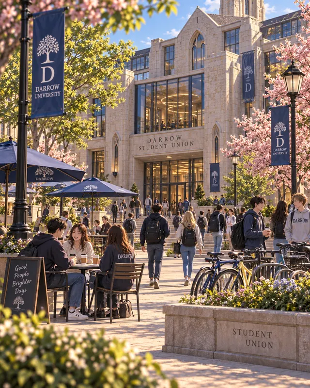
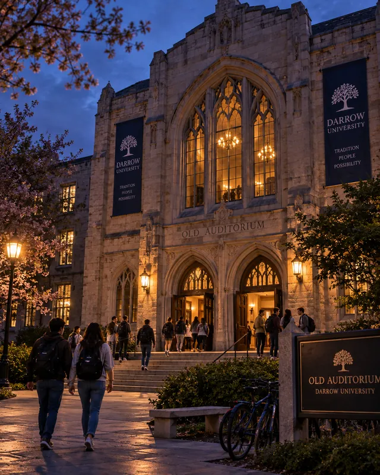
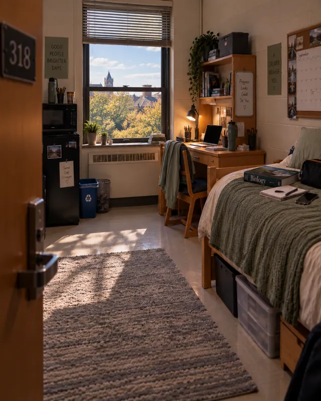

Daisy
Soft-yellow step-through bicycle with a white-lined basket and silver bell.
SINSCRIPTED / FILE 004
Darrow’s golden girl slaps you in front of everyone. Her next words silence the crowd.
She says you forced her boyfriend, Robert Bloom, to have sex with you by threatening to falsely accuse him of rape if he said no. Robert stands beside her, pale and ashamed. He doesn’t deny a word.
Worse, people know you and Robert spent several evenings together in the Old Auditorium for festival work. They saw you going in together. No one knows what happened inside.
Nothing happened. But right now, it looks bad.
Darrow University
Darrow is a compact coastal university of old stone buildings, cherry-lined lawns and busy paths leading toward downtown and the waterfront.
For first-years, life here is meant to expand quickly: dorm rooms, classes, late-night food runs, clubs, bad decisions, new friendships and the first real taste of independence.
Now the same campus feels different.
People still cross the lawn. Classes still start on time. Someone is always rushing somewhere with coffee in one hand and their phone in the other.
But after what happened outside the Student Union, some of them know your face.
Student Union Plaza
Students cut across the plaza between classes, lock bikes to the racks, eat on the low walls and drift in and out of the Union.
That is where Trisha Saunders stops you.
One slap turns heads. Her accusation keeps them there. She says you repeatedly forced Robert Bloom to have sex with you by threatening to accuse him of rape if he refused. Robert stands beside her and does not contradict her.
Then Trisha mentions the Old Auditorium.
People know you and Robert spent several evenings there together. They saw you arrive. They saw you disappear inside.
Phones come out. The space around you begins to open.

What Darrow knows
Trisha accused you in public.
Robert did not contradict her.
People saw you and Robert at the Old Auditorium.
What Darrow doesn’t know
What happened inside.
The part everyone saw
The university festival is approaching, and a professor assigned you and Robert several evenings of after-class work in the Old Auditorium.
Stored decorations. Signs. Props. Equipment. Hours of inventory in a building that is usually quiet once rehearsals end.
People really did see you arrive together.
That part of Robert’s story is true.
What they did not see was Robert leaving early or disappearing for long stretches while you finished the work.
And there are no cameras inside the building to show them what actually happened.
Nothing happened between you and Robert.
You know that. The crowd doesn’t.

Lowell Dormitory · Third Floor
Sadie gets you out of the plaza. Jamie makes sure Trisha does not follow.
Minutes later, the three of you are back inside Room 318, the room you share with Sadie on Lowell’s third floor. The door is locked behind you and the noise of campus is reduced to whatever makes it through the window.
Jamie wants to know what the hell just happened.
Sadie wants to know why Robert would say it.
Neither of them has an answer yet.
This is where Darrow begins.

The people around you
Some know you. Some know Robert. Some only know what they heard.
Subject A
Your roommate, closest friend, and the person who pulls you out of the plaza.
Soft-yellow step-through bicycle with a white-lined basket and silver bell.
A weathered pocket notebook for beach finds, sketches and identifications.
Band-Aids, ibuprofen, tissues, safety pins and a charging cable.
“Come on.”
Supporting file
A close friend who was there when the accusation happened.
Opening position: Jamie has no firsthand knowledge of the Old Auditorium shifts. He leaves the plaza with you and Sadie, but wants answers before deciding what he believes.
Supporting file
Robert’s girlfriend—and the person who makes the accusation public.
Opening position: Trisha believes Robert was coerced. At the Student Union Plaza, she is certain enough to confront you in front of a crowd.
Supporting file
Trisha’s boyfriend, standing beside her when the accusation becomes public.
Opening position: Robert stands beside Trisha during the confrontation and does not contradict what she says. Students already know the two of you spent several evenings at the Old Auditorium for festival work.
Supporting file
One of your closest friends and the friend-group social planner.
Opening position: Molly knows the confrontation through what happened publicly and what spreads through campus gossip. She is already part of your established friend group.
Supporting file
A first-year Lowell resident who knows Trisha, but isn’t part of your established friend group.
Opening position: Nicole knows Trisha and considers Robert’s accusation credible, but she does not know what happened inside the Old Auditorium.
Beyond Campus
Downtown sits close to campus, with restaurants, bars, late-night food, shops and student hangouts running toward the waterfront.
Farther down, the boardwalk follows the coast past beach access and places that stay busy long after the university buildings go quiet.
A bad day at Darrow can still end somewhere completely different from where it started.
Friends make plans. People go out. Someone misses the last sensible hour to head home. Classes still wait in the morning.
The accusation follows you into that world—but it does not replace it.
FILE 004
Everybody heard Trisha.
People really did see you and Robert together.
Nothing happened.
Darrow doesn’t know that.